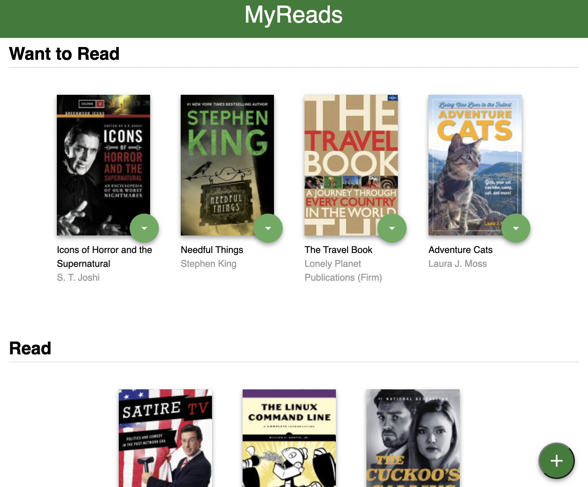

Food order app is an I build based on the Udemy project build by
Maximilian Schwarzmüller. In this project, I used Redux, Axios and
Lodash. Data was consumed from an api I build using Firbase. Most of
the styling is provided by Max. Schwarzmüller. All the JS was
written by me.
Technologies used: React, Redux,
Router, Lodash, Firebase, axios.
Live Demo
GitHub
This app is the final project for the Udacity React-Redux course,
which is part of the React Nanodegree program.
It's a web application that allows users to play the
game "Would You Rather?" The game is played like this: a user is
asked, "Would you like [option A] or [option B]?" It is against the
rules to answer "neither" or "both."
Users, which are some Pokemons, can ask and answer
questions, check which questions they have or have not answered, see
how other Pokemons voted, and see how they rank on the leaderboard
with this app.
On the home page, after logging in, the Pokemon can
toggle between his/her answered and unanswered polls. In all
categories, the polls are organized from most recently created to
least recently created.
When a Pokemon votes in a poll, all of the information
from the poll that was answered is presented. On the poll details
page, the Pokemon's response is recorded and clearly apparent.
Pokemons are only allowed to vote once per question and cannot
change their answers once they have voted. The polling question
appears in the "Answered" column when the user returns to the main
page.
Technologies used: React, Redux,
Router, Semantic UI.
Live Demo
GitHub

MyReads is a virtual bookcase to store your books and track what
you’re reading. Using the provided Books API, you’ll search for
books and add them to a bookshelf you choose. It is possible also to
move books from one shelf to another. This app is one of the two
projects required for Udacity's React Nanodegree program.
Technologies used: React, Router.
GitHub